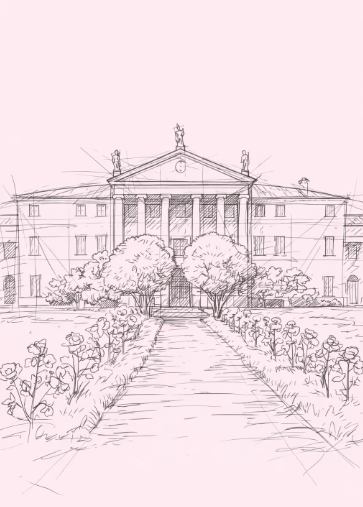

Structural Exploration
Framing Project
An exploration of spatial order through structural framing

Digital Structural Wireframe
Wood framing is a common construction technique in residential buildings, typically using dimensional lumber to form the structural support for walls, floors, and roofs.
Methods of wood framing include platform framing and balloon framing. The purpose of this project is to familiarize students with platform framing in residential construction. Working in teams, they research, design, and construct a small-scale section detailing key structural elements.
For this project, team members produced both digital and physical models using the chosen floor plan, with Revit or other modeling software. This project is based on Louis Kahn’s Fisher House, emphasizing the understanding of structural systems and the organization of residential spaces through wood framing techniques.